Viaggi ai Mercatini di Natale Monaco
Parti anche tu con i viaggi ai Mercatini di Natale di Monaco e vivi la magia delle feste natalizie nella splendida città della Baviera. Scopri il calore e la gioia che la città simbolo dell'Oktoberfest ti trasmette e addentrati per le viuzze innevate alla ricerca del regalo di Natale perfetto. I Viaggi ai Mercatini di Monaco sono studiati apposta per permetterti di vivere appieno la città nel periodo del Natale, lasciando spazio ad ognuno di girare per la città liberamente.
Scheda Viaggio ai Mercatini di Natale a Monaco + Castelli della Baviera
COS'E' INCLUSO
- Viaggio A/R con pullman GT;
- Pernottamento in hotel 3 stelle o superiore;
- Colazione in hotel;
- Visita e ingresso al Castello di Linderhof;
- Visita ai Mercatini di Natale di Monaco;
- Cena presso la mitica birreria Augustiner;
- Visita e ingresso al Castello di Nymphenburg e dei suoi meravigliosi giardini;
- Pranzo al monastero benedettino di Andechs;
- Visita e ingresso al castello di Neuschwanstein;
- Accompagnatore durante il viaggio;
- Trasferimenti come da programma;
- Assistenza durante il soggiorno;
- Materiale informativo;
- Versione lite dell'E-Book "guida di Monaco"
- Assicurazione RC;
IN REGALO PER OGNI PRENOTAZIONE
1 Voucher Omaggio per 1 persona per la SPA Il Regno di Dioniso (valido 3 mesi)
Viaggi ai Mercatini di Natale
- Viaggio A/R con pullman GT;
- 1 Pernottamento in Hotel 3*;
- 1 Prima Colazione;
- Visita Mercatini di Natale Norimberga;
- Visita libera di Norimberga;
- Accompagnatore durante il viaggio;
- Trasferimenti come da programma;
- Assicurazione RC;
- Materiale informativo;
- Assistenza 24h;
IN REGALO PER OGNI PRENOTAZIONE
1 Voucher Omaggio per 1 persona per la SPA Il Regno di Dioniso (valido 3 mesi)
- Viaggio A/R con pullman GT;
- Visita Mercatini di Natale Montreux;
- Accompagnatore durante il viaggio;
- Trasferimenti come da programma;
- Assicurazione RC;
- Materiale informativo;
- Assistenza 24h;
IN REGALO PER OGNI PRENOTAZIONE
1 Voucher Omaggio per 1 persona per la SPA Il Regno di Dioniso (valido 3 mesi)
- Viaggio A/R con pullman GT;
- 1 Pernottamento in Hotel 3* o superiore;
- 1 Prima Colazione;
- 1 Cena Tipica;
- Visita ai Mercatini di Natale Bolzano;
- Buono sconto per bevanda calda;
- Visita ai Mercatini di Natale Bressanone;
- Visita ai Mercatini di Natale Trento;
- Visita ai Mercatini di Natale Merano;
- Visita museo ceramiche Thun;
- Accompagnatore durante il viaggio;
- Trasferimenti come da programma;
- Assicurazione RC;
- Materiale informativo;
- Assistenza 24h
IN REGALO PER OGNI PRENOTAZIONE
1 Voucher Omaggio per 1 persona per la SPA Il Regno di Dioniso (valido 3 mesi)
- Viaggio A/R con pullman GT;
- 1 Pernottamento in Hotel 3* o superiore;
- 1 Cena Tipica;
- 1 Prima Colazione;
- Viaggio sul Trenino Rosso, tratta completa Tirano-Saint Moritz;
- Guida sul trenino;
- Visita guidata di Tirano;
- Visita guidata di Saint Moritz;
- Visita di Livigno e ai suoi Mercatini di Natale*;
- Ingresso alle Terme di Bormio o di Pontresina;
- eBook: Guida Completa del Trenino Rosso (valore di 9,99�!);
- Accompagnatore durante il viaggio;
- Trasferimenti come da programma;
- Assicurazione RC;
- Materiale informativo;
IN REGALO PER OGNI PRENOTAZIONE
1 Voucher Omaggio per 1 persona per la SPA Il Regno di Dioniso (valido 3 mesi)
* ATTENZIONE: Nelle date del 23/11,24/11 e 25/12 i mercatini a Livigno non saranno presenti. Sar� possibile comunque effettuare lo shopping natalizio presso i negozi della cittadina.
- Viaggio A/R con pullman GT;
- Viaggio sul Trenino Rosso del Bernina da Tirano a Saint Moritz ;
- Guida a bordo del Trenino;
- Visita di Livigno e dei suoi Mercatini di Natale;
- eBook: Guida Completa del Trenino Rosso (valore di 9,99�!);
- Accompagnatore durante il viaggio;
- Trasferimenti come da programma;
- Assicurazione RC;
- Materiale informativo;
- Assistenza 24h;
IN REGALO PER OGNI PRENOTAZIONE
1 Voucher Omaggio per 1 persona per la SPA Il Regno di Dioniso (valido 3 mesi)
* ATTENZIONE: Nelle date del 23/11,24/11 e 25/12 i mercatini a Livigno non saranno presenti. Sar� possibile comunque effettuare lo shopping natalizio presso i negozi della cittadina.
- Viaggio A/R con pullman GT;
- Visita Mercatini di Natale Bolzano;
- Ingresso e visita al Thuniversum, la fabbrica museo della Thun;
- Buono Sconto per Bevanda calda;
- Accompagnatore durante il viaggio;
- Trasferimenti come da programma;
- Assicurazione RC;
- Materiale informativo;
- Assistenza 24h;
IN REGALO PER OGNI PRENOTAZIONE
1 Voucher Omaggio per 1 persona per la SPA Il Regno di Dioniso (valido 3 mesi)
- Viaggio A/R con pullman GT;
- Visita Mercatini di Natale Zurigo;
- Accompagnatore durante il viaggio;
- Trasferimenti come da programma;
- Assicurazione RC;
- Materiale informativo;
- Assistenza 24h;
IN REGALO PER OGNI PRENOTAZIONE
1 Voucher Omaggio per 1 persona per la SPA Il Regno di Dioniso (valido 3 mesi)
- Viaggio A/R con pullman GT;
- 2 Pernottamenti in Hotel 3*;
- 2 Prime Colazioni;
- Visita Mercatini di Natale Praga;
- Accompagnatore durante il viaggio;
- Trasferimenti come da programma;
- Assicurazione RC;
- Materiale informativo;
- Assistenza 24h;
IN REGALO PER OGNI PRENOTAZIONE
1 Voucher Omaggio per 1 persona per la SPA Il Regno di Dioniso (valido 3 mesi)
- Viaggio A/R con pullman GT;
- 3 Pernottamenti in Hotel 3*;
- 3 Prime Colazioni;
- Visita Mercatini di Natale Praga;
- Accompagnatore durante il viaggio;
- Trasferimenti come da programma;
- Assicurazione RC;
- Materiale informativo;
- Assistenza 24h;
IN REGALO PER OGNI PRENOTAZIONE
1 Voucher Omaggio per 1 persona per la SPA Il Regno di Dioniso (valido 3 mesi)
- Viaggio A/R con pullman GT;
- 2 Pernottamenti in Hotel 3*;
- 2 Prime Colazioni;
- Visita Mercatini di Natale Vienna;
- Accompagnatore durante il viaggio;
- Trasferimenti come da programma;
- Assicurazione RC;
- Materiale informativo;
- Assistenza 24h;
IN REGALO PER OGNI PRENOTAZIONE
1 Voucher Omaggio per 1 persona per la SPA Il Regno di Dioniso (valido 3 mesi)
- Viaggio A/R con pullman GT;
- 3 Pernottamenti in Hotel 3*;
- 3 Prime Colazioni;
- Visita Mercatini di Natale Vienna;
- Accompagnatore durante il viaggio;
- Trasferimenti come da programma;
- Assicurazione RC;
- Materiale informativo;
- Assistenza 24h;
IN REGALO PER OGNI PRENOTAZIONE
1 Voucher Omaggio per 1 persona per la SPA Il Regno di Dioniso (valido 3 mesi)
- Viaggio A/R con pullman GT;
- 1 Pernottamento in Hotel 3*;
- 1 Prima Colazione;
- Visita Mercatini di Natale a Stoccarda;
- Visita alle Cascate del Reno;
- Accompagnatore durante il viaggio;
- Trasferimenti come da programma;
- Assicurazione RC;
- Materiale informativo;
- Assistenza 24h;
IN REGALO PER OGNI PRENOTAZIONE
1 Voucher Omaggio per 1 persona per la SPA Il Regno di Dioniso (valido 3 mesi)
- Viaggio A/R con pullman GT;
- 1 Pernottamento in Hotel 3* nella Foresta Nera;
- Cena inclusa in hotel;
- 1 Prima Colazione;
- Visita Mercatini di Natale Strasburgo;
- Visita Mercatini di Natale Friburgo;
- Accompagnatore durante il viaggio;
- Trasferimenti come da programma;
- Assicurazione RC;
- Materiale informativo;
- Assistenza 24h;
IN REGALO PER OGNI PRENOTAZIONE
1 Voucher Omaggio per 1 persona per la SPA Il Regno di Dioniso (valido 3 mesi)
- Viaggio A/R con pullman GT;
- Visita Mercatini di Natale Merano;
- Visita al Thuniversum;
- Accompagnatore durante il viaggio;
- Trasferimenti come da programma;
- Assicurazione RC;
- Materiale informativo;
- Assistenza 24h;
IN REGALO PER OGNI PRENOTAZIONE
1 Voucher Omaggio per 1 persona per la SPA Il Regno di Dioniso (valido 3 mesi)
- Viaggio A/R con pullman GT;
- 1 Pernottamento in Hotel 3*;
- 1 Prima Colazione;
- Cena in hotel;
- Bevande ai pasti;
- Visita Mercatini di Natale Innsbruck;
- Accompagnatore durante il viaggio;
- Trasferimenti come da programma;
- Assicurazione RC;
- Materiale informativo;
- Assistenza 24h;
IN REGALO PER OGNI PRENOTAZIONE
1 Voucher Omaggio per 1 persona per la SPA Il Regno di Dioniso (valido 3 mesi)
- Viaggio A/R con pullman GT;
- Pernottamento in hotel 3 stelle o superiore;
- Colazione in hotel;
- Visita e ingresso al Castello di Linderhof;
- Visita ai Mercatini di Natale di Monaco;
- Cena presso la mitica birreria Augustiner;
- Visita e ingresso al Castello di Nymphenburg e dei suoi meravigliosi giardini;
- Pranzo al monastero benedettino di Andechs;
- Visita e ingresso al castello di Neuschwanstein;
- Accompagnatore durante il viaggio;
- Trasferimenti come da programma;
- Assistenza durante il soggiorno;
- Materiale informativo;
- Versione lite dell'E-Book "guida di Monaco"
- Assicurazione RC;
IN REGALO PER OGNI PRENOTAZIONE
1 Voucher Omaggio per 1 persona per la SPA Il Regno di Dioniso (valido 3 mesi)
- Viaggio A/R con pullman GT;
- 1 Pernottamento in Hotel 3*;
- 1 Prima Colazione;
- Visita Mercatini di Natale Salisburgo;
- Accompagnatore durante il viaggio;
- Trasferimenti come da programma;
- Assicurazione RC;
- Materiale informativo;
- Assistenza 24h;
IN REGALO PER OGNI PRENOTAZIONE
1 Voucher Omaggio per 1 persona per la SPA Il Regno di Dioniso (valido 3 mesi)
- Viaggio A/R con pullman GT;
- 2 Pernottamenti in Hotel 3*;
- 2 Prime Colazioni;
- Visita Mercatini di Natale di Parigi;
- Accompagnatore durante il viaggio;
- Trasferimenti come da programma;
- Assicurazione RC;
- Materiale informativo;
- Assistenza 24h;
IN REGALO PER OGNI PRENOTAZIONE
1 Voucher Omaggio per 1 persona per la SPA Il Regno di Dioniso (valido 3 mesi)
- Viaggio A/R con pullman GT;
- 3 Pernottamenti in Hotel 3*;
- 3 Prime Colazioni;
- Visita Mercatini di Natale di Parigi;
- Accompagnatore durante il viaggio;
- Trasferimenti come da programma;
- Assicurazione RC;
- Materiale informativo;
- Assistenza 24h;
IN REGALO PER OGNI PRENOTAZIONE
1 Voucher Omaggio per 1 persona per la SPA Il Regno di Dioniso (valido 3 mesi)
- Viaggio A/R con pullman GT;
- 1 Pernottamento in Hotel 3*;
- Cena in hotel;
- Bevande ai pasti;
- 1 Prima Colazione;
- Visita Mercatini di Natale Innsbruck;
- Visita libera dell'isola Herreinsel;
- Visita libera dell'isola Fraueninsel;
- Visita Mercatini di Natale dell'isola delle Dame;
- Mini Crociera sul Lago Chiemsee;
- Accompagnatore durante il viaggio;
- Trasferimenti come da programma;
- Assicurazione RC;
- Materiale informativo;
- Assistenza 24h;
IN REGALO PER OGNI PRENOTAZIONE
1 Voucher Omaggio per 1 persona per la SPA Il Regno di Dioniso (valido 3 mesi)
- Viaggio in bus GT
- 2 pernottamenti in hotel 3* o superiore lungo la Strada Romantica Tedesca
- 2 colazioni in hotel
- 2 cene in hotel
- Bevande incluse
- Ingresso e visita al castello di Neuschwanstein
- Visita dei Mercatini di Natale di Fussen
- Visita dei Mercatini di Natale di Rothenburg
- Visita dei Mercatini di Natale di N�rdlingen
- Visita dei Mercatini di Natale di Augusta
- Accompagnatore durante il viaggio
- Assistenza durante il soggiorno
- Spostamenti come da programma
- Assicurazione RC
- Materiale Informativo
- Versione lite dell'E-Book "Guida di F�ssen" del valore di 7,99�;
- Versione lite dell'E-Book "Guida di Augusta" del valore di 7,99�;
- Versione lite dell'E-Book "Guida della Strada Romantica" del valore di 9,99�;
- Versione lite dell'E-Book "Guida di Rothenburg" del valore di 7,99�;
- Versione lite dell'E-Book "Alla scoperta del Castello di Neuschwanstein" del valore di 9,99�
- Versione lite dell'E-Book "Alla scoperta del Castello di Hohenschwangau" del valore di 9,99�
IN REGALO PER OGNI PRENOTAZIONE
1 Voucher Omaggio per 1 persona per la SPA Il Regno di Dioniso (valido 3 mesi)
- Viaggio A/R con pullman GT;
- 2 Pernottamenti in Hotel 3* o superiore ad Amburgo o Lubecca;
- 2 Prime Colazioni;
- 2 Cene in hotel;
- Bevande ai pasti;
- Visita Mercatini di Natale Amburgo;
- Visita Mercatini di Natale Lubecca;
- Accompagnatore durante il viaggio;
- Trasferimenti come da programma;
- Assicurazione RC;
- Materiale informativo;
- Assistenza 24h;
IN REGALO PER OGNI PRENOTAZIONE
1 Voucher Omaggio per 1 persona per la SPA Il Regno di Dioniso (valido 3 mesi)
- Viaggio A/R con pullman GT;
- Visita guidata di Napoli;
- Visita ai Mercatini di Natale di Napoli e alla bellissima San Gregorio Armeno;
- 3 Pernottamenti in Hotel 4*;
- 3 Cene in hotel;
- 2 pranzi in ristorante;
- Bevande incluse;
- 3 colazioni in hotel;
- Visita di Orvieto;
- Visita di Sorrento;
- Pranzo a Sorrento;
- Visita di Amalfi;
- Visita di Montecassino;
- Visita della Costiera;
- Altre visite come da programma;
- eBook lite:"Guida della Costiera Amalfitana"
- Accompagnatore durante il viaggio;
- Trasferimenti come da programma;
- Assistenza durante il soggiorno;
- Assicurazione RC;
IN REGALO PER OGNI PRENOTAZIONE
1 Voucher Omaggio per 1 persona per la SPA Il Regno di Dioniso (valido 3 mesi)
- Viaggio A/R con pullman GranTurismo;
- Pernottamento in Hotel 3* o superiore;
- Colazione in hotel;
- Cena in Hotel;
- Bevande incluse ai pasti;
- Visita guidata di Innsbruck;
- Visita dei mercatini di Natale di Innsbruck;
- Trasferimento, biglietto d'Ingresso e visita del "mondo di cristallo", il museo Swarovski;
- Visita di Bolzano e dei suoi mercatini;
- Visita di Bressanone e dei suoi mercatini;
- Trasferimento, Ingresso e visita al Thuniversum, la famosa fabbrica delle ceramiche Thun;
- E-Book sul Tirolo del valore di 9,99�;
- Assicurazione R/C;
- Accompagnatore per tutto il viaggio;
- Assistenza Club Magellano in loco per tutto il soggiorno;
- Trasferimenti come da programma;
IN REGALO PER OGNI PRENOTAZIONE
1 Voucher Omaggio per 1 persona per la SPA Il Regno di Dioniso (valido 3 mesi)
- Viaggio A/R con pullman GT;
- Visita Mercatini di Natale del lago di Braies;
- Visita Mercatini di Natale di San Candido;
- Visita Mercatini di Natale di Brunico;
- Pernottamento in Hotel;
- Cena in Hotel;
- Colazione in hotel;
- Visita al museo aziendale e al factory shop presso lo stabilimento Loacker di Heinfels;
- Accompagnatore durante il viaggio;
- Trasferimenti come da programma;
- Assicurazione RC;
- Materiale informativo;
- Assistenza 24h;
IN REGALO PER OGNI PRENOTAZIONE
1 Voucher Omaggio per 1 persona per la SPA Il Regno di Dioniso (valido 3 mesi)
- Viaggio A/R con pullman GT;
- Visita guidata di Locarno e della Piazza Grande;
- Tempo libero a disposizione;
- Viaggio sul Trenino delle Centovalli da Locarno a Santa Maria Maggiore A/R;
- Visita libera di Santa Maria Maggiore e dei suoi mercatini di Natale;
- Accompagnatore durante il viaggio;
- Assistenza 24h durante il soggiorno;
- Trasferimenti come da programma;
- Assicurazione RC;
- Materiale informativo
NB La guida e le visite guidate sono effettuate in lingua Italiana.
IN REGALO PER OGNI PRENOTAZIONE
1 Voucher Omaggio per 1 persona per la SPA Il Regno di Dioniso (valido 3 mesi)
- Viaggio A/R con pullman GT;
- Pernottamento in hotel 3 stelle o superiore
- Colazione in hotel
- Cena
- Visita guidata del centro storico di Urbino;
- Visita guidata del centro storico di San Marino;
- Tempo libero a disposizione per i mercatini di Natale di San Marino;
- Visita guidata di Candelara;
- Tempo libero per la visita dei mercatini di Natale di Candelara;
- Visita guidata di Sant'Agata Feltria;
- Tempo libero per la visita dei mercatini di Sant'Agata Feltria;
- Accompagnatore durante il viaggio;
- Assistenza 24h durante il soggiorno;
- Trasferimenti come da programma;
- Assicurazione RC;
- Materiale informativo
NB La guida e le visite guidate sono effettuate in lingua Italiana.
IN REGALO PER OGNI PRENOTAZIONE
1 Voucher Omaggio per 1 persona per la SPA Il Regno di Dioniso (valido 3 mesi)
- Viaggio A/R con pullman GT;
- Visita mercatini di Natale del lago di Bled;
- Visita mercatini di Natale di Lubiana;
- Pernottamento in Hotel con Casin� interno;
- Ingresso gratuito al Casin� interno all'hotel, (Casin� Kongo);
- Fiches omaggio al Casin� interno;
- Welcome drink;
- Colazione in hotel;
- Cena in hotel;
- Accompagnatore durante il viaggio;
- Trasferimenti come da programma;
- Assicurazione RC;
- Materiale informativo;
- Assistenza 24h;
IN REGALO PER OGNI PRENOTAZIONE
1 Voucher Omaggio per 1 persona per la SPA Il Regno di Dioniso (valido 3 mesi)
- Viaggio A/R con pullman GT;
- Ingresso alla casa di Babbo Natale a Govone;
- Accompagnatore durante il viaggio;
- Assistenza 24 h durante il soggiorno;
- Trasferimenti come da programma;
- Assicurazione RC;
IN REGALO PER OGNI PRENOTAZIONE
1 Voucher Omaggio per 1 persona per la SPA Il Regno di Dioniso (valido 3 mesi)
- Viaggio A/R con pullman GT;
- Accompagnatore durante il viaggio;
- Assistenza 24 h durante il soggiorno;
- Trasferimenti come da programma;
- Assicurazione RC;
IN REGALO PER OGNI PRENOTAZIONE
1 Voucher Omaggio per 1 persona per la SPA Il Regno di Dioniso (valido 3 mesi)
- Viaggio in bus GT
- 1 pernottamento in hotel 3* o superiore lungo la Strada Romantica Tedesca
- colazione in hotel
- cena in hotel
- Bevande incluse
- Ticket ingresso e visita guidata al castello di Neuschwanstein
- Visita dei Mercatini di Natale di Fussen
- Visita dei Mercatini di Natale di Landsberg am Lech
- Visita dei Mercatini di Natale di Augusta
- Visita della Wieskirche
- Accompagnatore durante il viaggio
- Assistenza durante il soggiorno
- Spostamenti come da programma
- Assicurazione RC
- Materiale Informativo
- Versione lite dell'E-Book "Guida di F�ssen" del valore di 7,99�;
- Versione lite dell'E-Book "Guida di Augusta" del valore di 7,99�;
- Versione lite dell'E-Book "Guida della Strada Romantica" del valore di 9,99�;
- Versione lite dell'E-Book "Alla scoperta del Castello di Neuschwanstein" del valore di 9,99�
IN REGALO PER OGNI PRENOTAZIONE
1 Voucher Omaggio per 1 persona per la SPA Il Regno di Dioniso (valido 3 mesi)
- Viaggio A/R con pullman GT;
- Visita ai Mercatini di Natale di Lucerna;
- Accompagnatore durante il viaggio;
- Trasferimenti come da programma;
- Assicurazione RC;
- Materiale informativo;
- Assistenza 24h;
- Viaggio A/R con pullman GT;
- Pernottamento in hotel 3 stelle o superiore
- Cena inclusa in hotel;
- 1 Prima Colazione;
- Visita Mercatini di Lucerna;
- Visita Mercatini di Natale di Costanza;
- Accompagnatore durante il viaggio;
- Trasferimenti come da programma;
- Assicurazione RC;
- Materiale informativo;
- Assistenza 24h;
- Viaggio A/R con pullman GT;
- Accompagnatore durante tutta la durata del viaggio;
- Visita libera di Berna e dei suoi mercatini di Natale;
- Crociera in battello sul lago di Thun da Spiez a Thun;
- Visita libera di Thun;
- Assicurazione RC;
- Materiale Informativo;
- Trasferimenti come da Programma;
Programma Viaggio ai Mercatini di Natale a Monaco + Castelli della Baviera
Mercatini di Natale Monaco e Castelli della Baviera - Giorno 1
- Partenza dalle varie citta' per i Mercatini di Natale di Monaco e i castelli della Baviera;
- Pernottamento in bus;
Mercatini di Natale Monaco e Castelli della Baviera - Giorno 2
- Arrivo a Oberammergau, cittadina situata nelle Alpi Bavaresi e riconosciuta nel mondo per la bellezza degli affreschi sulle facciate delle sue case, per l'inizio del Viaggio ai Mercatini di Monaco e ai Castelli della Baviera;
- Visita del Castello di Linderhof, famosa per i suoi splendidi giardini curati che compongono il suo parco, oltre per essere considerata come la residenza privata, e più intima, di Re Ludwig II;
- Spostamento verso Andechs, paesino tipico bavarese immerso nella natura e sede della famosissima birra che viene prodotta nell'omonimo Monastero Benedettino, e il Sacro Monte;
- Pranzo tipico nella birreria del Monastero Benedettino con un menu che comprende: mezzo stinco di maiale con brezel, una porzione di Kartoffensalat (insalata di patate) e mezzo litro di birra chiara. Si avrà così modo di assaporare le delizie della tipica gastronomia bavarese, oltre ad aver modo di placare la propria sete con la mitica birra prodotta qui seguendo la ricetta originale;
- Ripartenza verso Monaco e deposito dei bagagli in hotel;
- Tempo libero per girare Monaco, i suoi monumenti o le sue birrerie, e visitare i suoi meravigliosi Mercatini di Natale, che illuminano a festa Marienplatz e le piazze e parchi della città;
- Cena Tipica nella birreria Augustiner, in cui sarà possibile assaggiare i piatti della cucina tipica, accompagnati da numerosi boccali della birra più buona di tutta Monaco in uno dei luoghi pu' antichi della citta';
- Serata Libera e rientro in hotel per il pernottamento;
Mercatini di Natale Monaco e Castelli della Baviera - Giorno 3
- Colazione in Hotel;
- Visita del castello di Nymphenburg, famoso per essere stato la residenza estiva dei Re della Baviera e per il suo stile architettonico, e dei suoi giardini che la circondano per oltre 200 ettari e che rendono il tutto un luogo incantato;
- Partenza verso Fussen, la seconda città più famosa di tutta la Baviera per essere il punto di partenza per le escursioni che portano ai due castelli più importanti di tutta la Germania, Neuschwanstein e Hohenschwangau;
- Pranzo libero;
- Visita Guidata del castello di Neuschwanstein, il castello più famoso al mondo, conosciuto anche col nome di Castello delle Fiabe, e che Walt Disney prese a modello e a ispirazione per la realizzazione delle fortezze delle sue principesse;
- Fine del tour dei Mercatini di Natale e dei Castelli della Baviera e ripartenza verso l'Italia;
Città di Partenza Viaggio ai Mercatini di Natale a Monaco + Castelli della Baviera
- Agrate229€
- Alessandria244€
- Arezzo263€
- Asti249€
- Bergamo229€
- Bologna253€
- Bolzano229€
- Brescia229€
- Busalla259€
- Como229€
- Firenze259€
- Genova259€
- Grumello229€
- Melegnano234€
- Milano229€
- Modena253€
- Novara253€
- Parma253€
- Pavia244€
- Peschiera-del-Garda229€
- Piacenza253€
- Reggio-Emilia253€
- Roma283€
- Santhia253€
- Siena263€
- Terni283€
- Torino253€
- Tortona249€
- Trento229€
- Trezzo229€
- Verona229€
- Viterbo283€
Il Pacchetto non Comprende
- eventuale tassa di soggiorno (ca 1-2 euro)
- Ingresso e Visita guidata al Museo della Birra, con degustazione di Birra e Bretzel
- quanto non specificato nella sezione "nel prezzo è incluso".
Date e Orari Mercatini di Monaco
Mercatino di Natale a Monaco in Marienplatz
dal 27/11/2022 al 24/12/2022 – Marienplatz
Questi Mercatini di Natale di Monaco di svolgono in Marienplatz, la piazza più importante della città, ed osservano il seguente programma:
- Lunedì – Sabato dalle 10.00 alle 21.00
- Domenica dalle 10.00 alle 20.00
- 24/12/2022 dalle 10.00 alle 14.00
Mercatino di Natale di Monaco in stile Medioevale
dal 27/11/2022 al 23/12/2022 – Wittelsbacher Platz (vicino ad Odeonsplatz)
I Mercatini di Monaco in stile Medioevale si tengono tutti gli anni in Wittelsbacher Platz (vicino ad Odeonsplatz) e con i seguenti orari:
- Tutti i giorni dalle 10.00 alle 20.00
Mercatino di Natale di Monaco nel quartiere di Schwabing
dal 01/12/2022 al 24/12/2022 – Quartiere di Schwabing
- Lunedì- Venerdì dalle 12.00 alle 20.00
- Sabato e Domenica dalle 11.00 alle 20.30
- 24 Dicembre dalle 11.00 alle 14.00
Mercatini di Natale di Monaco di Pasing
dal 25/11/2022 al 23/12/2022 – Schererplatz
Questi Mercatini di Monaco si svolgono in Schererplatz, davanti alla chiesa Maria Schutz, e osservano i seguenti orari:
- Sabato & Domenica dalle 13.00 alle 19.30
Mercatini di Natale di Monaco di Haidhausen
dal 24/11/2022 al 24/12/2022 – Weißenburger Platz
I Mercatini di Monaco di Haidhausen si svolgono tutti gli anni in Weißenburger Platz e osservano questi orari:
- Tutti i giorni dalle 11.00 alle 20.00
- 24 dicembre dalle 10.00 alle 14.00
Mercatino di Natale di Monaco alla Sendlinger Tor
dal 25/11/2022 al 23/12/2022 – Sendlinger-Tor-Platz
Questi bellissimi mercatini di Natale di Monaco vengono organizzati tutti gli anni in Sendlinger-Tor-Platz e seguono i seguenti orari di apertura e chiusura:
- Tutti i giorni dalle 10.30 alle 21.00
Festival Tollwood di Monaco – Fase invernale
dal 23/11/2022 al 31/12/2022 – Theresienwiese
La fase invernale del Tollwood Festival di Monaco si tiene nel celeberrimo spazio del Theresienwiese e vigono i seguenti orari:
- Lunedì – Venerdì dalle 14.00 alle 24.00
- Sabato & Domenica dalle 11.00 alle 24.00
Mercatino di Natale di FeldmochingFestival Tollwood di Monaco – Fase invernale
dal 02/12/2022 al 04/12/2022 – Mehrzweckhalle – Georg-Zech-Allee 17
I Mercatini di Natale di Feldmoching si svolgono al seguente indirizzo: Mehrzweckhalle – Georg-Zech-Allee 17 e secondo i seguenti orari:
- Sabato dalle 13.00 alle 19.00
- Domenica dalle 11.00 alle 18.00
Mercatino di Natale di Monaco al Castello di Blutenburg
dal 08/12/2022 al 04/12/2022 – Castello di Blutenburg
Questo spettacolare Mercatino di Natale di Monaco si tiene al favoloso Castello di Blutenburg e secondo questi orari:
- Mercoledì dalle 16.00 alle 19.30
- Venerdì dalle 14.00 alle 19.30
- Sabato e Domenica dalle 11.00 alle 19.30
Mercatino di Natale di Monaco di Neuhausen
dal 20/11/2022 al 29/12/2022 – Rotkreuzplatz
Il Mercatino di Natale di Neuhausen si tiene a Rotkreuzplatz e segue i seguenti orari di apertura:
- Tutti i giorni dalle 11.00 alle 21.00
Mercatini di Natale di Monaco alla Praterinsel
dal 13/11/2022 al 18/12/2022 – Praterinsel
I Mercatini di Monaco che si svolgono alla Praterinsel, vicino al ponte Maximilian osservano i seguenti orari:
- Lunedì – Mercoledì dalle 15.00 alle 22.00
- Venerdì – Domenica dalle 11.00 alle 22.00
Mercatini di Natale di Monaco di Trudering
dal 20/11/2022 al 24/12/2022 – Wasserburger Landstraße 32
I Mercatini di Natale di Monaco di Trudering si svolgono in Wasserburger Landstraße 32 e osservano i seguenti orari:
- Sabato & Domenica dalle 10.00 alle 18.00
Mercatini di Monaco di Hohenzollernplatz
dal 20/11/2022 al 26/12/2022 – Hohenzollernplatz
Mercatini di Natale di Monaco al CVJM
dal 20/11/2022 al 25/11/2022 – Haus – Landwehrstr 13
Questi Mercatini di Monaco si tengono all’Ostello della gioventù CVJM Haus in Landwehrstr. 13 con i seguenti orari:
- Sabato dalle 10.00 alle 18.00
- Domenica dalle 10.00 alle 17.00
Mercatini di Monaco al Chinesischer Turm
dal 29/11/2022 al 26/12/2022 – Pub “Biergarten am Chinesischem Turm”
Questi insoliti Mercatini di Natale di Monaco si svolgono al Pub “Biergarten am Chinesischem Turm” – Giardino Inglese – ai piedi della Torre cinese con i seguenti orari:
- Lunedì – Venerdì dalle 12.00 alle 20.00
- Sabato & Domenica dalle 11.00 alle 20.30
Pink Christmas, il Mercatino di Natale di Monaco dedicato ai gay
dal 04/12/2022 al 18/12/2022 – Stephansplatz
Questo Mercatino di Monaco è dedicato interamente agli omosessuali e si tiene in Stephansplatz (vicino a Sendlinger Tor) con i seguenti orari:
- Venerdì dalle 14.00 alle 22.00
- Sabato & Domenica dalle 12.00 alle 22.00
Mercatino di Natale all’Aeroporto
dal 13/11/2022 al 11/01/2022 – Aeroporto di Monaco
Il Mercatino dell’Aeroporto di Monaco è il più longevo di tutti e si tiene appunto all’Aeroporto di Monaco con i seguenti orari:
- Lunedì – Venerdì dalle 14.00 alle 21.00
- Sabato & Domenica dalle 11.00 alle 21.00
Storia di Monaco
La storia della città si fa iniziare con il 1158, data in cui il duca di
Sassonia Enrico il Leone vi installò un accampamento militare battezzandolo Munichen.
Dopo circa un cinquantennio, il piccolo accampamento divenne una città fortificata, per
il cui controllo il duca ed il vescovo entrarono in conflitto. Dopo la Dieta di Augusta,
per ordine di Federico il Barbarossa Monaco divenne il centro del Ducato di Baviera,
dove da Otto von Wittelsbach sarebbe iniziata la secolare dominazione della celebre
dinastia bavarese, terminata solo nel 1918.
Durante il XVII secolo la città fu
sottomessa agli Asburgo per qualche tempo, ma si trattò di una breve parentesi. Nel 1806
Monaco divenne capitale del nuovo Regno di Baviera e furono costruiti molti dei palazzi
istituzionali che ancora oggi possiamo vedervi.
Dopo il primo conflitto mondiale, la città fu interessata da inquietudini sociali e politiche e in seguito divenne un centro operativo del nazismo, dal quale Hitler e i suoi seguaci tentarono, agli inizi, di rovesciare la Repubblica di Weimer. La rivolta fallì e costò al fanatico stratega l’arresto e la messa al bando del neonato partito nazista, ancora sconosciuto all’epoca fuori Monaco. Nonostante ciò, pochi anni dopo la città divenne una roccaforte nazista, chiamata “capitale del movimento”. Per questa ragione, Monaco venne pesantemente danneggiata dai bombardamenti alleati, anche se fortunatamente fu ricostruita con un meticoloso lavoro tendente a restituire la stessa fisionomia a strade e palazzi rispetto alla situazione pre-bellica.
Nella storia recente la città ha raggiunto livelli notevoli di sviluppo economico, politico e culturale ed ha ospitato numerosi eventi sportivi di portata mondiale, come le Olimpiadi del 1972 e i Mondiali di calcio del 1974 e del 2006.
Cosa vedere a Monaco
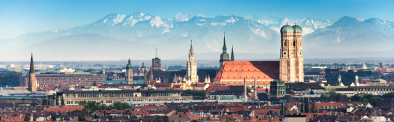Monaco è il capoluogo della stato federale tedesco della Baviera e con i suoi circa 1,3 milioni di abitanti è la terza città tedesca dopo Berlino e Amburgo. E’ caratterizzata da quel particolare fascino romantico che solo una città sede per secoli di una casata reale sa offrire. Sul piano artistico culturale non ha nulla da invidiare, grazie agli oltre 30 musei, i 2 castelli, i numerosi monumenti, l’infinità di birrerie di tutti i tipi, gli ambienti raffinati, come l’opera e i lussuosi negozi in Maximilianstraße, e la ben più popolare Festa della birra. Insomma, a Monaco non è davvero possibile annoiarsi o restare insoddisfatti!
Luoghi da Visitare a Monaco
Tra i luoghi del centro storico più importanti da visitare a Monaco c’è Marienplatz, la piazza principale della città, in cui si trovano il palazzo del Municipio e la Frauenkirche.
Frauenkirche
La Frauenki 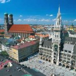rche è nota anche come Cattedrale di Nostra Signora ed è appunto la cattedrale di Monaco di Baviera, sede dell’arcivescovo di Monaco e Frisinga. La sua costruzione fu commissionata dal re Sigismondo di Baviera tra il 1468 ed il 1488. Sorta dove precedentemente era costruita una basilica romanica, l’imponente struttura in mattoni è uno dei più belli esempi di gotico cittadino che, con I due campanili gemelli alti quasi cento metri, domina nettamente il tessuto urbano. Le cupole che sormontano i campanili, a forma di cipolla e realizzate in ottone, vennero ultimate solo nel 1525. All’interno della chiesa sono conservati molti importanti reperti di grande valore storico-artistico: il monumento funebre di Ludovico il Bavaro, sculture e quadri dal XIV fino al XVIII secolo, l’Altare di Memminger, la statua a grandezza naturale di San Giorgio sopra il portale di nordovest, infine in una capella laterale le reliquie del Santo patrono di Monaco S. Benno. Una curiosità: all’ingresso della chiesa si trova la cosiddetta Teufelstritt o impronta del diavolo. La leggenda racconta che il diavolo sarebbe entrato nella chiesa per ridicolizzarla, poiché mancava di finestre e, in effetti, guardando verso l’altare, le colonne delle navate nascondono alla vista qualsiasi finestra.
Neues Rathaus – Municipio Nuovo
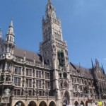Il Neues Rathaus (il Municipio Nuovo) fu realizzato nel XIX secolo in stile neogotico, in particolare esso rimanda al gotico olandese. La struttura è molto ampia, all’interno formata da sei cortili, e presenta una facciata riccamente decorata con riferimenti alla storia bavarese. Il Municipio è famoso soprattutto per la sua torre, sormontata da una statua in bronzo del Münchner Kindl (Bambinello di Monaco), simbolo della città, e dal bellissimo orologio dotato di uno dei più grandi carillon del mondo, il Glockenspiel. Con le 43 campane e le 32 statue, è il quarto al mondo per dimensioni e riveste un fondamentale ruolo turistico, poiché offre ogni giorno uno spettacolo eccezionale. Infatti, da più di un secolo le statue dell’orologio allo scoccare delle ore si mettono letteralmente a ballare. Ogni giorno dalle 11 alle 12 si assiste alla “Danza dei bottai”, una rappresentazione che ogni anno viene messa in scena anche per le strade della città e che commemora la scampata epidemia di peste del 1515-17. Alla fine di questa rappresentazione, un gallo dorato apre le ali, mentre un meccanismo a soffietto ne riproduce il canto. Il meccanismo del carrillon funziona tramite rulli intercambiabili, a ciascuno dei quali corrisponde una melodia di accompagnamento. Pertanto ogni mese, al cambio del rullo, cambia la melodia! Nelle ore serali invece, dalle nicchie situate al settimo piano della torre, compaiono le figure di un alfiere con corno, che benedice il Münchner Kindl, e di un angelo della pace che lo accompagna a letto. Questa seconda rappresentazione è chiamata “Il Bambinello di Monaco viene portato a letto”.
Hofbräuhaus
Senza allontanarsi tanto da Marienplatz si incontra la Hofbräuhaus, la più famosa birreria di Monaco e del mondo! Ogni giorno sui tavoli in legno delle sue sale vengono consumati circa 10.000 litri di birra, serviti nel celebre boccale da un litro, il Maß, con l’accompagnamento di rigorosa musica bavarese.
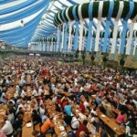A proposito di
birra, come dimenticare poi l’Oktoberfest,
l’evento che ha reso Monaco famosa in tutto il mondo per la più importante festa
della birra esistente. Ogni anno
dalla fine di settembre l’Oktoberfest richiama in città migliaia di turisti da tutto
il mondo!
La
Residenza di Monaco di Baviera per secoli ha rappresentato il
fulcro politico e culturale prima del
ducato, poi del principato e, infine, del regno bavarese. Essa svolgeva la duplice
funzione di reggia e di sede del
governo e, pertanto, fu inscindibilmente legata alla dinastia dei Wittelsbach. La
Residenza era inoltre il luogo in
cui i regnanti conservavano le loro collezioni d’arte e il tesoro della casata. Essa
subì sistemazioni ed
ampliamenti a seconda del volere dei singoli re, che per l’occasione incaricavano
rinomati artisti. Al suo interno,
perciò, si trovano opere e monumenti notevoli, come il Teatro Cuvilliés, costruito
tra 1751 e 1755, che rappresenta
un capolavoro dell’architettura teatrale di corte in stile Rococò.
Castello di Nymphenburg
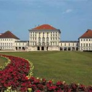Il Castello di Nymphenburg, ovvero il Castello della Ninfa, è uno splendido palazzo barocco. Era la residenza estiva dei re bavaresi ed oggi, insieme al suo parco, è uno dei più celebri monumenti di Monaco di Baviera. La grandiosità delle pareti barocche (ampie circa 700 metri) è pari solo alla bellezza degli affreschi contenuti all’interno, in sale come la Saal Steinerner (Sala di Pietra), una delle più spettacolari. Il parco di 200 ettari che lo circonda, che in età barocca era un giardino all’italiana, all’inizio del XIX secolo venne trasformato nell’attuale Giardino Inglese, tuttora il polmone verde di Monaco, addirittura di dimensioni maggiori a quelle di Central Park e, probabilmente, uno dei più grandi parchi della città intera.
Tra le aree verdi di Monaco non va dimenticato però anche l’Olympiagelände, il bellissimo Parco Olimpico dove si tennero i giochi olimpici nel 1972.
Castello di Schleißheim
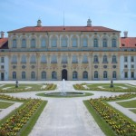Il complesso del castello di Schleißheim a nord di Monaco è costituito da tre castelli: il Vecchio, il Nuovo, ed il castello di Lustheim. Oggi nel castello è ospitata una galleria di dipinti barocchi appartenenti alla raccolta dello Stato bavarese, una delle cosiddette gallerie secondarie rispetto alla Alte Pinakothek di Monaco, anche se la qualità delle opere esposte, specialmente dopo l’ultimo allestimento del 2001, è molto alta.
Infine, va ricordato anche che vicino a Monaco si trova il campo di concentramento di Dachau.
Musei a Monaco
Monaco è una città molto ricca dal punto di vista artistico, con numerosi musei di portata internazionale.
Glipoteca di Monaco
La Gliptoteca propone sculture dell’antica Grecia e dell’antica Roma, la Vecchia Pinacoteca (Alte Pinakothek) custodisce capolavori della pittura europea dal XIV al XVIII secolo, la Nuova Pinacoteca (Neue Pinakothek) offre un’interessante panoramica dell’arte europea del XIX secolo, la Pinacoteca delle Arti Contemporanee (Pinakothek der Moderne), uno degli edifici museali più grandi d’Europa, è costituita da quattro importanti musei dove i visitatori possono ammirare collezioni d’arte, grafica, architettura e design dal XX al XXI secolo, la Lenbachhaus presenta ampie collezioni che vanno dal gotico all’età contemporanea.
Museo della Residenza reale di Monaco
Il Museo della Residenza reale conserva oggi i tesori appartenuti alla casata dei Wittelsbach, gli storici sovrani bavaresi. Gli inestimabili pezzi di questa collezione sono ospitati nelle 130 stanze di uno dei musei di corte più belli d’Europa. Tra gli oggetti più antichi spiccano il ciborio in miniatura di Arnolfo di Carinzia, il Crocifisso della regina Gisella e i cofanetti in avorio provenienti da Ceylon.
La Fondazione Culturale Hypo-Kulturstiftung nata nel 1983 a Monaco è nota al pubblico soprattutto per il suo Museo d’arte Kunsthalle, sede di frequenti mostre che costituiscono un appuntamento fisso nella vita culturale della città. In uno spazio espositivo di 3.200 metri quadrati trova posto l’arte europea dal Rinascimento al Romanticismo, oltre alla sezione dedicata ai grandi artisti del Novecento.
Il Deutsches Museum
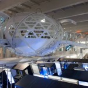Il Deutsches Museum di Monaco di Baviera è il museo della tecnica più grande d’Europa, con circa 60.000 metri quadrati in cui trovano spazio le esposizioni dei più vari settori della scienza e della tecnica. Esperimenti, presentazioni di novità tecnologiche, ricostruzioni di ambienti, attrazioni che avvicinano grandi e piccini alla scienza sono solo alcune delle motivazioni per visitare questo importante museo tedesco.
Museo di Architetturao
Il Museo di Architettura (Architekturmuseum) vanta la più grande collezione specialistica di architettura in Germania. Nel suo archivio sono attualmente contenuti circa 350.000 disegni firmati da 700 architetti, oltre a 100.000 fotografie, 500 plastici, atti ufficiali e numerosi preziosi trattati di architettura e incisioni. Di recente hanno fatto la loro comparsa anche stampe da computer e animazioni digitali.
La Città del cinema Bavaria
Monaco è una città vivace sotto molti punti di vista e una delle forme d’arte a cui dedica più attenzione è il cinema. Il Bavaria-Filmstadt è stato ed è tra i più grandi studios cinematografici tedeschi. Fondato nel 1919, vi lavorarono registi del calibro di Alfred Hitchcock, Orson Welles, Rainer Werner Fassbender e Wim Wenders e attori come Sofia Loren, Heinz Rühmann ed Elizabeth Taylor. Ora all’interno degli studi c’è un museo in cui il visitatore può osservare i set di autentiche produzioni cinematografiche, gli scatti che ne immortalano alcuni momenti e tante altre testimonianze.
Giardino botanico di Monaco-Nymphenburg
Attorno al Castello di Nymphenburg si stende il meraviglioso Giardino Botanico, fondato nel 1809 tra i primissimi in Europa. Si estende su 22 ettari con oltre 14.000 specie di piante ed accoglie ogni anno mezzo milione di visitatori da tutto il mondo.
Museo BMW
Monaco è anche la sede del Museo BMW. Qui si possono ammirare le auto che hanno fatto la storia dell’importante casa automobilistica tedesca: dalla Dixi dell’anteguerra, all’Isetta, dalle Art Cars dei divi anni Quaranta, ai modelli dei set hollywoodiani, fino alle macchine da Formula 1. E poi ci sono i motori, le turbine, gli aerei, le moto e gli automezzi in tutte le variazioni immaginabili. In tutto oltre 400 veicoli e motori, testimoni dell’inestimabile tradizione BMW dagli esordi ai giorni nostri.
Birrificio Erdinger Weißbräu
Tra i simboli di Monaco più riconosciuti non può mancare naturalmente la birra. Nella città bavarese si trova l’Erdinger Weißbräu, il birrificio più grande al mondo dedicato alla birra chiara, in cui dal 1886 vive la tradizione dell’antica ricetta, oggi sapientemente rivisitata secondo i sistemi più tecnologicamente avanzati. Per estimatori o semplici curiosi la tappa a Erding è senza dubbio imperdibile nel tour cittadino, tanto quanto la visita a monumenti e musei. La birrà infatti a Monaco è un’istituzione e questo celebre birrificio ne ricostruisce per i visitatori tutto il processo produttivo: materie prime, cottura, fermentazione, filtraggio, imbottigliamento con le tecniche più moderne, maturazione in cantine con scaffalature high-tech, carico e spedizione in tutto il mondo.
Museo della birra e dell’Oktoberfest
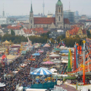Ma la birra è protagonista anche del celebre Museo della birra e dell’Oktoberfest, ospitato in uno dei più antichi palazzi di Monaco, risalente al XIV secolo. Qui si illustra la storia della celebre bevanda attraverso l’esposizione di alcuni degli strumenti principali utilizzati nel corso dei secoli per la sua produzione: dalla primissima produzione della birra in Mesopotamia e in Egitto, fino ad arrivare alle popolazioni celtiche e germaniche, per terminare con la legge sulla genuinità della birra e, naturalmente, con la birra di Monaco. La mostra, che occupa due piani del palazzo, illustra esaurientemente anche la storia dell’Oktoberfest, che nacque nel 1810 come festa di nozze, in occasione del matrimonio di re Lodovico I con la principessa Teresa von Sachsen-Hildburghausen, e poi si trasformò in festa nazionale, per divenire infine una delle feste popolari più grandi al mondo.
Cucina di Monaco
Il piatto più celebre è rappresentato dai Weißwurst, le
salsicce bianche di vitello tipiche di Monaco. Sono spesso accompagnate da patate
intere arrostite in forno, crauti,
e senape. Il Weißwurst viene venduto anche presso i baracchini sparsi per la città,
servito in un panino o
accompagnato dal Bretzel. Il Bretzel è un prodotto da forno che sostituisce
concettualmente la nostra schiacciata (è
salato, ed è venduto nelle panetterie (Bäckerei) in ogni momento del giorno e a
tutte le ore. È a forma di fiocco
(ne esiste una versione dolce di pane briocheato coperto di cioccolato) ed è coperto
di semi di girasole o di zucca.
Questo pane si accompagna bene con i piatti di carne, ma soprattutto con la
birra.
A base di suino sono il Haxen
(coscia di maiale) e gli arrosti di maiale, che vengono
accompagnati da gnocchi di patate
(Knödeln), patate arrosto o crauti.
Ma nei ristoranti c’è posto anche per il
pesce, (per lo più la trota)
soprattutto al cartoccio e accompagnato dalle immancabili patate.
Volendo, in
Baviera è possibile mangiare solo
vegetariano con le zuppe, di orzo e verdure, asparagi e le patate, cucinate in
tantissimo modi diversi.
Il dolce
più famoso è senza alcun dubbio lo strudel di mele (Apfelstrudel), se viene servito
con gelato o con crema. La
crema, in fine può rappresentare anche un dolce a sé, come nel caso della Bayerische
Creme (crema bavarese).
Nella città ospite dell’Oktoberfest, non può che essere protagonista la birra. Ce
n’è davvero un’infinità, ma tra le
più celebri a Monaco vanno ricordate la Spaten, la
Augustiner, la
Löwenbräu Original e la Paulaner,
la grande fabbrica di birre di
Monaco che produce oggi fino a 7 diverse specialità di birre con una tradizione che
affonda nell’attività monastica
del 1600.
Mercatini di Mercatini di Natale di Monaco di Pasing
Sono dei piccoli Mercatini di Natale nella zona ovest di Monaco, aperti solo nei weekend ma davvero accoglienti e romantici. Si trovano in Schererplatz, davanti alla chiesa Maria Schutz. Le loro 25 casette di legno decorate e illuminate propongono cosmetici a base di miele, corone dell’Avvento, antiquariato, bambole da collezione, giocattoli in legno, maglieria norvegese, presepi, lavori d’artigianato in paglia e vetro. E naturalmente, tra uno stand e l’altro, cori di ragazzi e corni alpini accompagnano lo shopping.
Mercatini di Monaco di Haidhauser
Circa una sessantina di bancarelle costituiscono l’Haidhauser Weihnachtsmarkt, i Mercatino di Natale di Monaco situati in Weissenburger Platz. Qui si trovano prodotti d’artigianato di alta qualità provenienti da tutto il mondo, decorazioni natalizie, presepi, ceramiche, lavori in pelle, ricami all’uncinetto e vin brulé. E’ presente anche una mostra di Presepi che ospita tra gli altri un esemplare altoatesino ed un presepe vivente. Per i bambini è allestita una pittoresca giostra, mentre per i più grandi sono previsti concerti di musiche natalizie eseguite con la cetra, esibizioni di gruppi jazz, di violini e di cori.
Mercatini di Natale di Monaco alla Sendlinger Tor
Situati presso la Sendlinger Tor, una delle antiche porte di accesso di Monaco, questi deliziosi Mercatini di Natale accolgono circa 40 casette di legno decorate, che espongono per lo più decorazioni per l’albero, giocattoli in legno e presepi da tutto il mondo.
Non solo i Mercatini di Natale di Monaco
Il Festival Tollwood
.jpg) Il Festival di Tolwood sono dei Mercatini
di Natale a Monaco
che si svolgono anche nella stessa area che ospita l’Oktoberfest,
Theresienwiesen. Si tratta di un
festival no-profit che si svolge a Monaco in estate e in inverno e
propone un mercato equo
solidale di prodotti gastronomici esclusivamente biologici e di artigianato
ad impatto ambientale zero.
Inoltre, fanno da eventi collaterali spettacoli circensi, concerti, cabaret, esibizioni
di acrobati, danzatori e
fantasisti, esposizioni di sculture e installazioni artistiche d’ogni tipo, mostre e
dibattiti. Sono dei Mercatini
frequentati soprattutto da giovani, anche per via del tipo di musica proposta e per il
fatto che gli stand offrano
artigianato e gastronomia etnica.
Il Festival di Tolwood sono dei Mercatini
di Natale a Monaco
che si svolgono anche nella stessa area che ospita l’Oktoberfest,
Theresienwiesen. Si tratta di un
festival no-profit che si svolge a Monaco in estate e in inverno e
propone un mercato equo
solidale di prodotti gastronomici esclusivamente biologici e di artigianato
ad impatto ambientale zero.
Inoltre, fanno da eventi collaterali spettacoli circensi, concerti, cabaret, esibizioni
di acrobati, danzatori e
fantasisti, esposizioni di sculture e installazioni artistiche d’ogni tipo, mostre e
dibattiti. Sono dei Mercatini
frequentati soprattutto da giovani, anche per via del tipo di musica proposta e per il
fatto che gli stand offrano
artigianato e gastronomia etnica.
Fiera del Presepe di Monaco
Altra attrattiva del Mercatino principale di Monaco è la Fiera
del Presepe, che si svolge nel cortile del Municipio, a pochi passi da
Marienplatz. Si tratta forse della mostra di presepi più grande della Germania e ne
ospita di tantissimi tipi: dal grande e opulento presepe orientale, a quello in
miniatura ambientato in un paesaggio alpino.
Ma non finisce qui. Dal balcone del
Municipio ogni pomeriggio alle 17.30 si diffondono le note delle musiche natalizie, si
esibiscono gruppi folk internazionali, cori alpini, cori di ragazzi e orchestre di
strumenti a fiato.
Altri Mercatini di Natale di Monaco
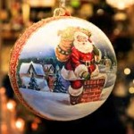Ma i Mercatini di Natale di Monaco non finiscono qui, ce ne sono davvero moltissimi!
Si ricordano il Mercatino di Feldmoching in Mehrzweckhalle, il suggestivo Mercatino al Castello di Blutenburg, il Mercatino di Neuhausen in Rotkreuzplatz, quello alla Praterinsel, una delle isole formate dal fiume Isar nel centro di Monaco, il Mercatino di Trudering e quello di Hohenzollernplatz. Alcuni Mercatini di Natale di Monaco sorgono in luoghi davvero insoliti. Addirittura uno si svolge vicino ad un famoso ostello della gioventù, il CVJM, mentre l’altro presso il Biergarten am Chinesischem Turm, uno dei più celebri Biergarten (ovvero una birreria all’aperto) di Monaco, situato nel Giardino Inglese, ai piedi della Torre cinese. Anche l’aeroporto di Monaco ospita un Mercatino di Natale. Per dimostrare che la capitale della Baviera non ha paura di osare per accontentare i gusti di tutti, basti sapere che esiste addirittura un Mercatino di Natale dedicato al mondo dei gay e chiamato Pink Christmas, situato in Stephansplatz non molto distante dalla Sendlinger Tor.
Mercatini di Natale Monaco
Date & Orari Apertura Mercatini
Nel mese di dicembre aprono i Mercatini di Natale di Monaco e la città diventa un caleidoscopio di luci, suoni e colori, mentre per le strade si respira il profumo del cibo e delle bevande calde, offerte dalle numerose bancarelle. Il più importante, nel centro storico, è accompagnato da una miriade di altri Mercatini di Natale di Monaco, ciascuno con la propria speciale atmosfera e le proprie particolari offerte.
Mercatini di Natale di Monaco in Marienplatz
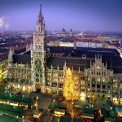
I Mercatini di Natale nel centro di Monaco sono considerati i
più importanti di tutta la Germania. Sono più di tre milioni i turisti che ogni anno
vengono a visitarli e ad
ammirare con essi la bellissima Marienplatz, la popolare
piazza-salotto come viene definita, e le
meraviglie della storia e dell’arte sparse nelle altre piazze e vie cittadine.
Questi Mercatini di
Monaco vantano una tradizione antichissima, le cui origini risalgono ai
Mercati di San Nicola del XIV
secolo, anche se la prima testimonianza scritta a darcene notizia è del 1642.
Le
circa 160 casette di legno che
li costituiscono sono collocate attorno ad un meraviglioso albero di
Natale che svetta per 30 metri
dal centro di Marienplatz, illuminato da 2500 suggestive luci che accendono di magia
l’intera piazza. Lo stile delle
bancarelle è tipicamente bavarese, come si può notare anche dalle specialità
gastronomiche proposte in questi
Mercatini di Natale di Monaco: mele al forno e caramellate, frutta
di ogni tipo ricoperta di
cioccolato, mandorle e altra frutta secca, biscotti allo zenzero, dolci di
marzapane, frittelle di patate con
composta di mele, hamburger di verdura, torte di patate, Dampfnudeln (dolci
lievitati al vapore con salsa di
vaniglia), vin brulé e Kinderpunsch (per i più piccoli), tè al rum, cioccolata calda
e soprattutto tanta, tanta
birra! L’artigianato, poi, propone manufatti dell’area bavarese ma anche dal resto
della Germania. Oltre alle
consuete decorazioni per l’albero e il presepe, ci sono le candele, i biglietti
augurali, gli abiti in lana cuciti a
mano, i pizzi, le ceramiche di Franconia, i vetri soffiati, i giocattoli e gli altri
oggetti in legno della
tradizione locale. Davvero dei Mercatini di Natale ideali, antichi,
grandi, famosi, ricchi di
idee-regalo economiche ed originali, pieno di golosità e, soprattutto, collocato in
una delle più belle città
d’Europa…
Cosa c’è di meglio che fare i turisti ed insieme godersi il Natale dei bavaresi come i bavaresi?!
Mercatino di Monaco dei Presepi
A Rindermarkt, a pochi passi da Marienplatz, si tiene quello che probabilmente è il maggior mercatino di Natale di Monaco di questo genere in tutta la città ma anche di tutta la Germania. Dalla lanterna per la stalla alla paglia per il bue e l’asinello, dai doni dei Re Magi alla stella cometa: si trova tutto ciò che occorre per un bel presepe da mettere sotto l’albero di Natale.
Mercatini di
Natale di Monaco nel quartiere di Schwabing
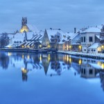
Tra quelli decentrati, uno dei più curiosi Mercatini di Natale di
Monaco si trova nel famoso quartiere degli artisti di
Schwabing e viene definito
Mercatino degli Artisti e degli Artigiani. E’ un Mercatino alternativo ai
classici bavaresi e risale al
1976, anno in cui un centinaio fra artisti ed artigiani lo istituirono per la prima
volta sul piazzale Munchner
Freiheit, con lo scopo di dar vita a un mercato dell’arte non tradizionale e
giovane. Qui gli espositori mostrano
dipinti, sculture, oggetti artigianali in pelle, in vetro, in ceramica, dipinti su
seta, oreficeria, fotografie e
candele.
Anche la proposta gastronomica si diversifica dalla tradizionale: si
trovano specialità eritree,
spagnole, messicane e italiane, salcicce e prodotti biologici di vario genere. E’
anche da questo bellissimo
Mercatino di Natale di Monaco che si coglie la multiculturalità di
Monaco, il suo essere insieme città
d’arte e tradizione, ma anche moderna metropoli al passo con i tempi.
Mercatini di Natale di Monaco in stile Medievale
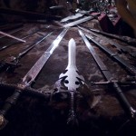 La tradizione medievale è molto viva in Germania. Nella capitale bavarese lo è più che mai nei Mercatini di Natale di Monaco in puro stile Medievale che nei giorni d’Avvento vengono allestiti in Wittelsbacher Platz. Al Mittelaltermarkt (è così che questo Mercatino di Monaco si chiama in tedesco) tutto sembra essersi fermato a quell’antica età, dalle decorazioni dei banchetti, al vestiario dei venditori, ai manufatti proposti. Si possono acquistare infatti oggetti d’artigianato caratteristici dell’epoca, come calici in peltro, strumenti musicali, corni da caccia, cesti, tessuti, frutta secca e spezie. Inoltre, il tutto viene arricchito da meravigliosi spettacoli di musica medievale e celtica…
Un salto indietro di qualche secolo che rende l’atmosfera natalizia se possibile ancora più magica!